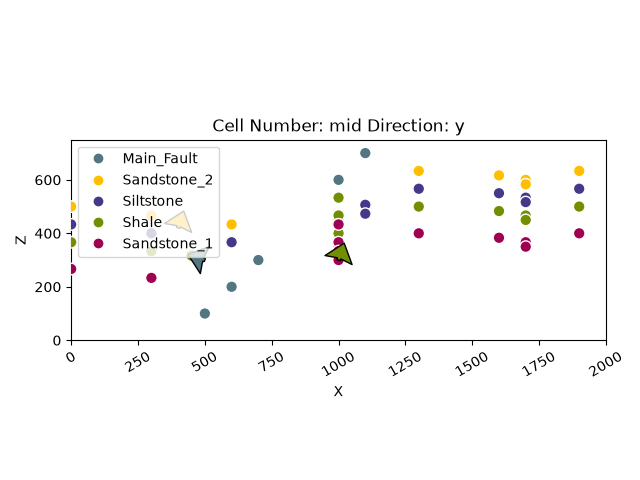
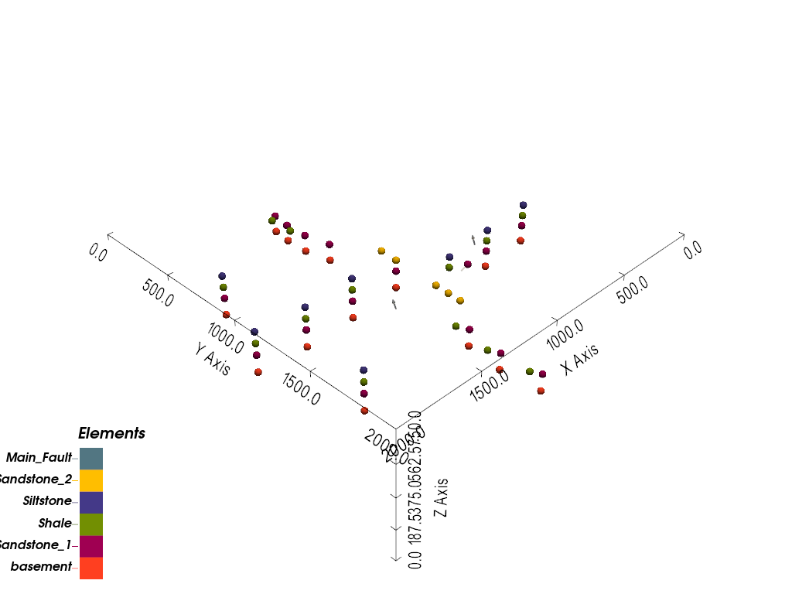
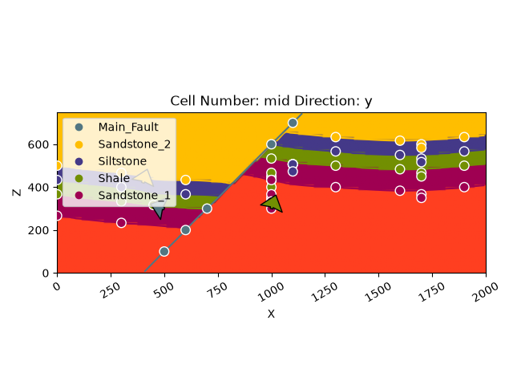
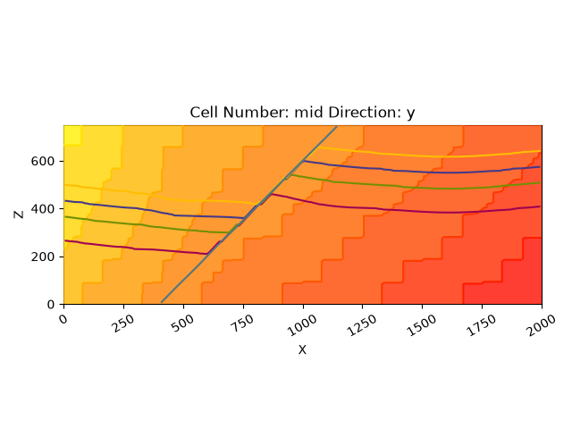
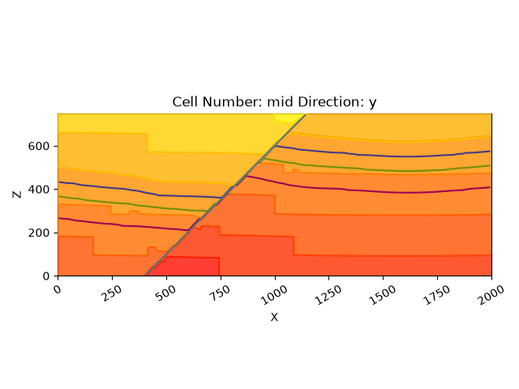
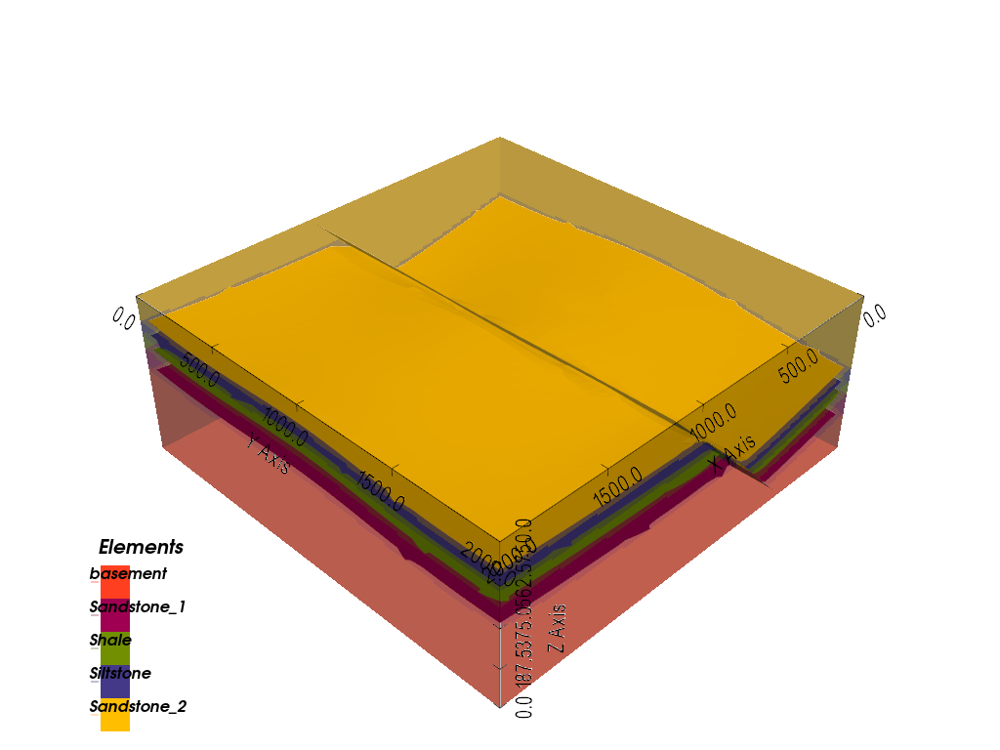
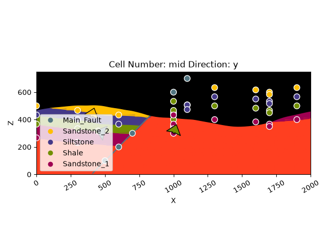
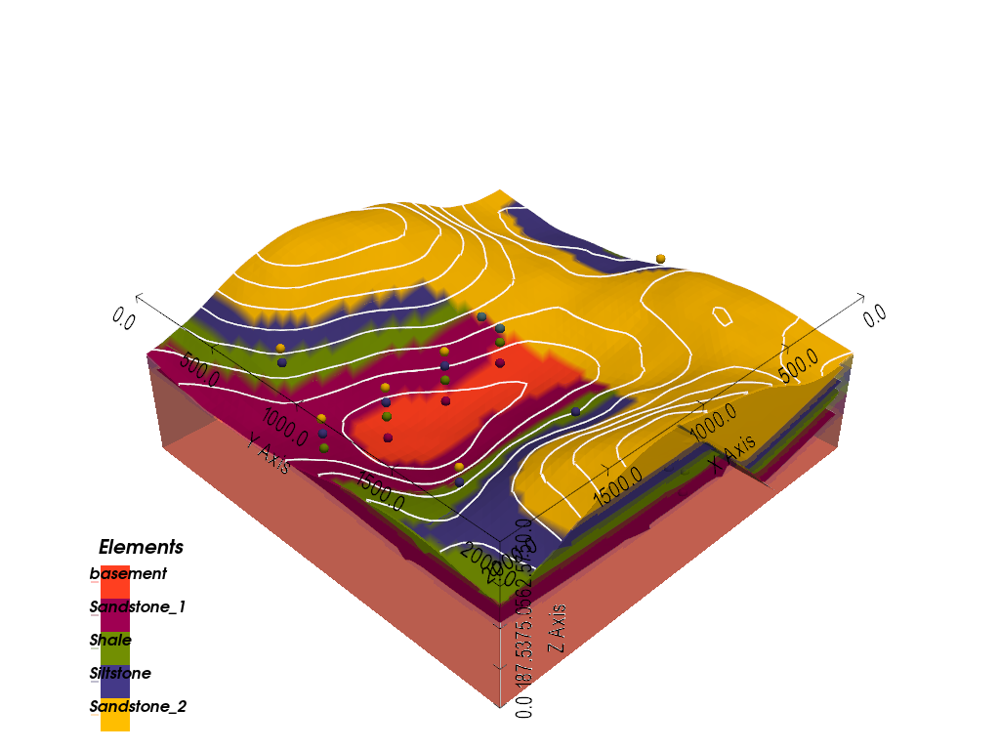

Note
Go to the end to download the full example code.
Basics: Data Classes and Modeling API¶
A closer look at gempy’s data classes and modeling API
This tutorial is a written companion to the video tutorials, covering the same simple fault model but going into more technical depth: the data classes gempy is built on, constructing structural elements and groups directly rather than through a CSV import, inspecting a computed model’s solutions and meshes, and saving a model to disk.
import numpy as np
import gempy as gp
import gempy_viewer as gpv
gempy’s data classes¶
gempy uses a small set of Python classes to store everything that goes into a model:
A GeoModel holds one StructuralFrame, which is an ordered list of
StructuralGroup objects (also called series or stacks), each containing one or
more StructuralElement objects – a lithological unit or a fault surface, defined
by a SurfacePointsTable and an OrientationsTable. The rest of this tutorial
builds up a model through these classes and looks at each one along the way.
Model setup¶
Surface points mark the bottom of a layer (if you need the top of a formation – modeling an intrusion, say – use an inverted orientation instead). Data can be supplied from CSV files, as here, or built up point by point in code, which the next tutorial covers.
The model’s extent defines the volume used for interpolation and plotting, and
should enclose all the input data. refinement sets the number of octree levels
used to extract smooth surfaces (see the Grids tutorial for the full explanation of
how this interacts with resolution).
data_path = 'https://raw.githubusercontent.com/cgre-aachen/gempy_data/master/'
geo_model = gp.create_geomodel(
project_name='Tutorial_Basics',
extent=[0, 2000, 0, 2000, 0, 750],
refinement=6,
importer_helper=gp.data.ImporterHelper(
path_to_orientations=data_path + "/data/input_data/getting_started/simple_fault_model_orientations.csv",
path_to_surface_points=data_path + "/data/input_data/getting_started/simple_fault_model_points.csv",
hash_surface_points="4cdd54cd510cf345a583610585f2206a2936a05faaae05595b61febfc0191563",
hash_orientations="7ba1de060fc8df668d411d0207a326bc94a6cdca9f5fe2ed511fd4db6b3f3526"
)
)
Surface points hash: 4cdd54cd510cf345a583610585f2206a2936a05faaae05595b61febfc0191563
Orientations hash: 7ba1de060fc8df668d411d0207a326bc94a6cdca9f5fe2ed511fd4db6b3f3526
ImporterHelper bundles everything needed to import data from various sources –
here, CSV files fetched over HTTP and verified against a known hash, matching every
other tutorial in this documentation.
Reviewing the imported data¶
The raw imported points and orientations are available as surface_points_copy and
orientations_copy:
Each structural element is internally tracked by a numeric ID. Note these aren’t the
small, sequential IDs used to color the lithology block in plots – they’re derived
directly from each element’s name and used for tracking identity regardless of
reordering. element_id_name_map looks up which ID corresponds to which element:
{np.int32(49745034): 'Main_Fault', np.int32(182903737): 'Sandstone_1', np.int32(247016868): 'Sandstone_2', np.int32(332313703): 'Shale', np.int32(426259438): 'Siltstone', 39541672: 'basement'}
Structural groups and series¶
Geological units need to appear in the correct chronological order – a sequence of
deposition, unconformities, intrusions, and so on. In gempy this is expressed by
assigning each unit (and each fault) to a structural group, using
map_stack_to_surfaces. Units in the same group share one continuous scalar field,
so the order within a group only affects the default color; the order between
groups is what encodes geological age, oldest at the bottom.
Faults are always their own group and must be younger than whatever they affect. Where multiple faults are involved, their relative order encodes their tectonic relationship (the first entry is the youngest).
This model has one fault and four stratigraphic layers, assigned to two groups:
gp.map_stack_to_surfaces(
gempy_model=geo_model,
mapping_object={
"Fault_Series": 'Main_Fault',
"Strat_Series": ('Sandstone_2', 'Siltstone', 'Shale', 'Sandstone_1')
}
)
map_stack_to_surfaces doesn’t yet mark Fault_Series as a fault – every group
defaults to an ERODE relation (the next section explains what that means).
set_is_fault does that:
gp.set_is_fault(geo_model, ["Fault_Series"])
Setting a group as a fault also populates fault_relations: a boolean matrix of
which groups each fault offsets. Here, Fault_Series (row 0) affects
Strat_Series (column 1), and nothing affects the fault itself:
array([[False, True],
[False, False]])
Building structural elements and groups directly¶
Importing from a CSV is only one way to get data into a model. Since a
StructuralElement is just a plain data class, it can be constructed directly from
arrays – useful when adding a unit that doesn’t come from a file, or when building a
model up incrementally (the next tutorial does exactly this, one borehole reading at
a time). A new element needs at least two surface points and one orientation
somewhere in its group before a model can be computed:
new_element = gp.data.StructuralElement(
name='Example_Surface',
color=next(geo_model.structural_frame.color_generator),
surface_points=gp.data.SurfacePointsTable.from_arrays(
x=np.array([500, 1500]),
y=np.array([1000, 1000]),
z=np.array([600, 600]),
names='Example_Surface'
),
orientations=gp.data.OrientationsTable.initialize_empty()
)
new_element
A StructuralGroup is likewise just a name, a list of elements, and a relation
type:
new_group = gp.data.StructuralGroup(
name='Example_Series',
elements=[new_element],
structural_relation=gp.data.StackRelationType.ERODE
)
new_group
Adding either of these to a live model is a matter of inserting them into the
structural frame – existing_group.append_element(...) for an element joining an
existing group, or structural_frame.insert_group(index, group) for a whole new
group – both covered as part of an actual worked example in the next tutorial. This
example isn’t inserted here, to keep the model above unchanged for the rest of this
tutorial.
Visualizing input data¶
With the data imported and organized into groups, it can be checked visually before
computing anything. plot_2d projects the input data onto a plane along a chosen
direction ('x', 'y', or 'z', default 'y'):
gpv.plot_2d(geo_model, show_lith=False, show_boundaries=False)

<gempy_viewer.modules.plot_2d.visualization_2d.Plot2D object at 0x7f3e459299d0>
and plot_3d shows the same data in an interactive 3D view:
gpv.plot_3d(geo_model, show_lith=False)

<gempy_viewer.modules.plot_3d.vista.GemPyToVista object at 0x7f3f00b58d60>
Computing the model¶
The interpolation parameters live in interpolation_options, with sensible
defaults (see the Grids tutorial for what number_octree_levels specifically
controls) – change them only if you understand the implications:
geo_model.interpolation_options
InterpolationOptions(kernel_options=KernelOptions(range=1.7, c_o=10.0, uni_degree=1, i_res=4.0, gi_res=2.0, number_dimensions=3, kernel_function=AvailableKernelFunctions.cubic, kernel_solver=Solvers.DEFAULT, compute_condition_number=False, optimizing_condition_number=False, condition_number=None), evaluation_options=EvaluationOptions(_number_octree_levels=6, _number_octree_levels_surface=4, octree_curvature_threshold=-1.0, octree_error_threshold=1.0, octree_min_level=2, mesh_extraction=True, mesh_extraction_masking_options=<MeshExtractionMaskingOptions.INTERSECT: 3>, mesh_extraction_fancy=True, evaluation_chunk_size=500000, compute_scalar=True, compute_scalar_gradient=False, verbose=False), debug=False, cache_mode=<CacheMode.IN_MEMORY_CACHE: 3>, cache_model_name='Tutorial_Basics', block_solutions_type=<BlockSolutionType.OCTREE: 1>, sigmoid_slope=5000000)
compute_model runs the interpolation and returns a Solutions object, which is
also stored on the model itself as geo_model.solutions for later reference:
gp.compute_model(geo_model)
geo_model.solutions
Setting Backend To: AvailableBackends.PYTORCH
GPU enabled. Using device: cuda
GPU device count: 1
Current GPU device: 0
Chunking done: 18 chunks
Chunking done: 16 chunks
Chunking done: 89 chunks
Chunking done: 7 chunks
Chunking done: 41 chunks
Chunking done: 7 chunks
Visualizing the result¶
The computed lithology block plots the same way as the input data, by default showing a section through the middle of the model:
gpv.plot_2d(geo_model, show_data=True, cell_number="mid", direction='y')

<gempy_viewer.modules.plot_2d.visualization_2d.Plot2D object at 0x7f3e541e39d0>
Each structural group has its own scalar field, selectable via series_n (its
position in map_stack_to_surfaces, 0-indexed) – series 0 is the fault:
gpv.plot_2d(geo_model, series_n=0, show_data=False, show_scalar=True, show_lith=False)

<gempy_viewer.modules.plot_2d.visualization_2d.Plot2D object at 0x7f3efa9eb150>
and series 1 is the stratigraphy, visibly offset by the fault:
gpv.plot_2d(geo_model, series_n=1, show_data=False, show_scalar=True, show_lith=False)

<gempy_viewer.modules.plot_2d.visualization_2d.Plot2D object at 0x7f3e541e39d0>
The same result in 3D, with the surfaces extracted via dual contouring:
gpv.plot_3d(geo_model, show_data=False)

<gempy_viewer.modules.plot_3d.vista.GemPyToVista object at 0x7f3f00b58d60>
Adding topography¶
gempy supports several other grid types for different purposes – the Grids tutorial covers all of them in depth. A quick, practical one to see here is topography, which lets a model’s surfaces be intersected with real (or, as below, synthetic) terrain:
gp.set_topography_from_random(
grid=geo_model.grid,
fractal_dimension=1.2,
d_z=np.array([350, 750]),
topography_resolution=np.array([50, 50]),
)
gp.compute_model(geo_model)
gpv.plot_2d(geo_model, show_topography=True)

Active grids: GridTypes.OCTREE|TOPOGRAPHY|NONE
Setting Backend To: AvailableBackends.PYTORCH
GPU enabled. Using device: cuda
GPU device count: 1
Current GPU device: 0
Chunking done: 18 chunks
Chunking done: 16 chunks
Chunking done: 89 chunks
Chunking done: 7 chunks
Chunking done: 41 chunks
Chunking done: 7 chunks
<gempy_viewer.modules.plot_2d.visualization_2d.Plot2D object at 0x7f3e541138d0>
gpv.plot_3d(geo_model, show_lith=True, show_topography=True)

<gempy_viewer.modules.plot_3d.vista.GemPyToVista object at 0x7f3f00a17e30>
Extracting solutions¶
Beyond plotting, geo_model.solutions holds the raw building blocks of the model
for further analysis or export. dc_meshes is a list of the extracted surface
meshes, in the same order as the structural frame – index 0 is the youngest
element, the fault:
((1656, 3), (3179, 3))
These vertex coordinates are in gempy’s internal, rescaled coordinate system rather
than the model’s real-world extent. input_transform (the same transform used to
normalize input data before interpolation) maps them back:
array([[4.14962628e+02, 2.09349265e+01, 1.89621196e+00],
[4.14810780e+02, 6.25974383e+01, 2.05674592e+00],
[4.14659464e+02, 1.04260007e+02, 2.21678183e+00],
...,
[1.11106592e+03, 1.97907262e+03, 7.17182139e+02],
[1.13428542e+03, 1.93741013e+03, 7.40676218e+02],
[1.13433491e+03, 1.97907265e+03, 7.40615851e+02]], shape=(1656, 3))
raw_arrays holds the underlying arrays directly – the lithology block
(lith_block), for instance, comes back as a flat array that needs reshaping to
the grid’s actual resolution to index into as a volume:
lith_block = geo_model.solutions.raw_arrays.lith_block
lith_block.shape
(2359296,)
lith_block.reshape(geo_model.grid.regular_grid.resolution).shape
(192, 192, 64)
Saving and loading a model¶
A GeoModel can be saved to a single file and reloaded later, without needing to
redo the setup above:
gp.save_model(geo_model, path='tutorial_basics_model.gempy')
/opt/buildAgent/work/3a8738c25f60c3c9/gempy/modules/serialization/save_load.py:33: UserWarning: This function is still in development. It may not work as expected.
warnings.warn("This function is still in development. It may not work as expected.")
'tutorial_basics_model.gempy'
reloaded_model = gp.load_model('tutorial_basics_model.gempy')
reloaded_model.structural_frame
/opt/buildAgent/work/3a8738c25f60c3c9/gempy/modules/serialization/save_load.py:118: UserWarning: This function is still in development. It may not work as expected.
warnings.warn("This function is still in development. It may not work as expected.")
Note
Model serialization is still marked as under active development in gempy (you’ll
see a UserWarning when saving/loading) – it works, but the format may still
change in a future release.
# sphinx_gallery_thumbnail_number = -3
Total running time of the script: (0 minutes 26.598 seconds)